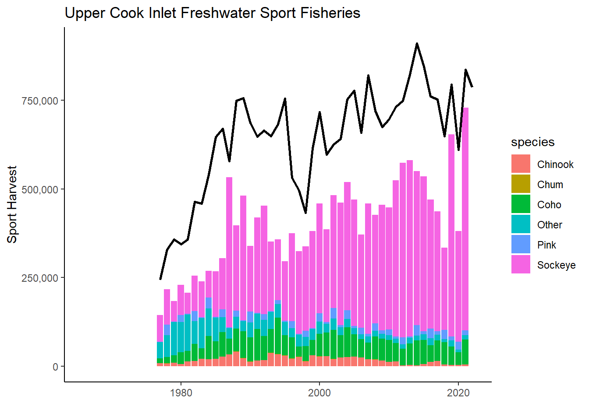
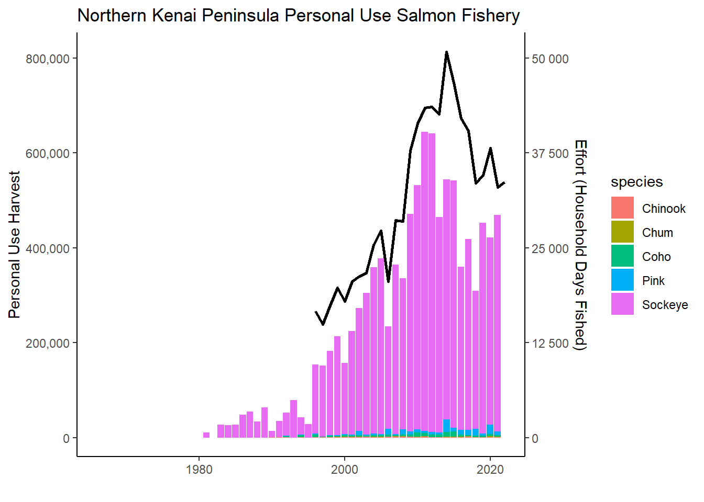
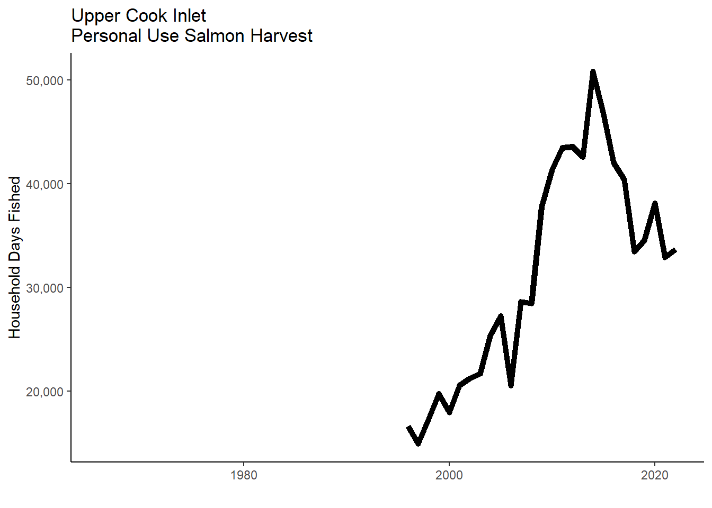
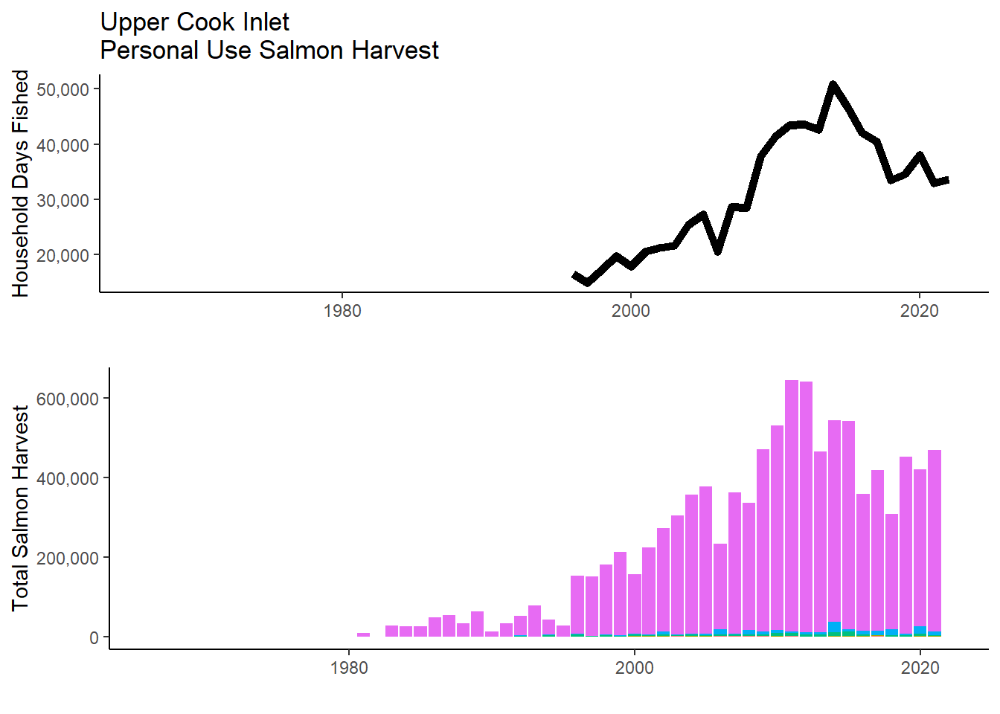
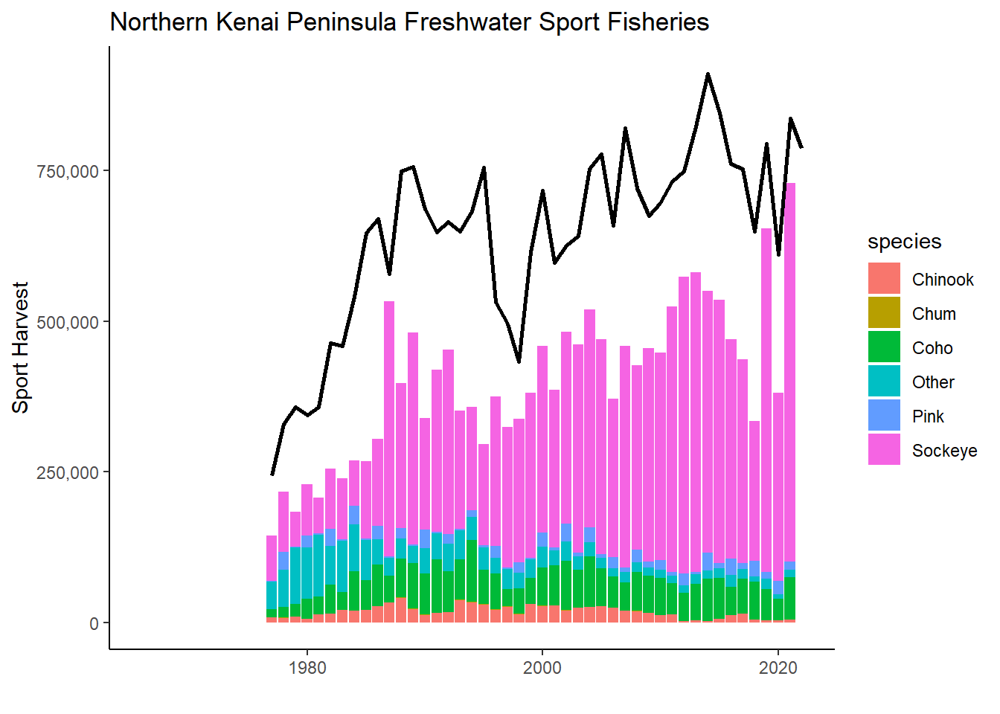

We assembled total salmon harvest data from the northern Kenai Peninsula area from 1966 - 2023, organized by fishery sector (commercial, sport, and personal use) and species. Our primary data source was Annual Management Reports from the Alaska Department of Fish and Game, as well as data assembled in (Schoen et al. 2017).
Harvest and effort data are reported differently for the commercial, recreational, and personal-use fisheries in Upper Cook Inlet, such that for this analysis it is not possible to compare the harvest and effort of salmon produced specifically by the Kenai or Kasilof Rivers (including their tributaries) by each fishing sector. To make comparisons within a common geographic area, we aggregated harvest and effort data from the northern Kenai Peninsula, ranging from the Kasilof River in the south to Ingram Creek in the north. The Kenai River is the predominant salmon-producing river in this area (adapted from (Schoen et al. 2017)).
1.1 Geographical Areas
Include a map here with the following features:
Kenai & Kasilof dipnet fishery locations
Kenai & Kasilof rivers sportfishing extent & regulated areas
Upper Cook Inlet Central Distric Commercial fishery management areas:
Northern Kenai Central District drift gill net (Figure 1.1) and east-side set gill net zones (fig tbd)
Figure 1.1: Upper Cook Inlet Central Disrtrict, commercial drift gillnet statsitical areas. From Lipka and Stumpf 2024 (pg 32).
1.2 Data Aggregation
We aggregated harvest and effort data from the following fisheries:
Personal-use: Kenai River dip net, Kasilof River dip net, and Kasilof River set net (Fall et al. 2015; Shields and Dupuis 2016). ADF&G also reports harvest and effort for an “unknown” personal-use fishery in Upper Cook Inlet. This harvest and effort was reported on permits on which the fishery was left blank. We allocated this harvest and effort to each known fishery based on the proportions of accurately reported harvest and effort in each year.
1.3 Plots
We visualized the total salmon harvest by fishery in the Upper Cook Inlet / Northern Kenai Peninsula Management Area in Figure 1.2.
Figure 1.2: Northern Kenai Peninsula Salmon Harvest 1966 - 2022, All Species, All Gear
1.4 Commercial Harvest
1.5 Personal Use Harvest




1.6 Sport Harvest

Next:
find commercial effort data
map fig(s) to indicate where data is sourced from
match stack colors to original fig
match stack order to legend order
explanatory text (comm has longest time series, etc)
diff colors for fig 1 than any other used
representative pictures of each fishery
Idea for NEW overall fig - stacked bar plot of harvest by fishery (& sub stack by species?) superimposed with total harvest … can visualize remaining escapement in context of harvest. –> might be hard to do becuase the above figures do not include solely kenai fish
place citations/sources for data below each plot
See p 91 in lipka & stumpf 2024, all uci sockeye harvests combined
plan - draft for sport and pu; send to anna, as for effort data for comm
Gates, Jenny L, Hansch, Kayla L, and Hynes, Lauren M. 2024. “Sport Fisheries in the Northern Kenai Peninsula Management Area, 2022.” Soldotna, AK.
Lipka, Colton, and Lucas Stumpf. 2024. “Upper Cook Inlet Commercial Fisheries Annual Management Report, 2022.” Soldotna, AK.
Schoen, Erik R, Mark S Wipfli, E Jamie Trammell, Daniel J Rinella, Angelica L Floyd, Jess Grunblatt, Molly D McCarthy, et al. 2017. “Future of Pacific Salmon in the Face of Environmental Change: Lessons from One of the World’s Remaining Productive Salmon Regions.”Fisheries 42 (10): 538–53. https://doi.org/10.1080/03632415.2017.1374251.
# Data Sources---execute: echo: falsedate: "`r Sys.Date()`"format: html: code-fold: true code-tools: true code-summary: "Show the code"---```{r, echo = F, message = F}#| warning: false#| message: false# clear environmentrm(list=ls())# load packageslibrary(tidyverse)library(janitor)library(scales)library(magrittr)library(gridExtra)library(plotly)``````{r echo = F}# harvest trends datasets 1966-2015# https://catalog.epscor.alaska.edu/dataset/commercial-recreational-and-personal-use-harvest-trends-in-the-kenai-river-salmon-fishery-1966-2015# overall run trends datasets 1976-2015# https://catalog.epscor.alaska.edu/dataset/total-run-sizes-of-chinook-and-sockeye-salmon-in-the-kenai-river-1976-2015# --\> may be necessary to wipe .bib file to correct author citation formats# NOTE - change this chapter about data sources to secondary focus; most readers will not want to dig into details of data sources...```We assembled total salmon harvest data from the northern Kenai Peninsula area from 1966 - 2023, organized by fishery sector (commercial, sport, and personal use) and species. Our primary data source was Annual Management Reports from the Alaska Department of Fish and Game, as well as data assembled in [@schoen2017].Harvest and effort data are reported differently for the commercial, recreational, and personal-use fisheries in Upper Cook Inlet, such that for this analysis it is not possible to compare the harvest and effort of salmon produced specifically by the Kenai or Kasilof Rivers (including their tributaries) by each fishing sector. To make comparisons within a common geographic area, we aggregated harvest and effort data from the northern Kenai Peninsula, ranging from the Kasilof River in the south to Ingram Creek in the north. The Kenai River is the predominant salmon-producing river in this area (adapted from [@schoen2017]).## Geographical Areas- Include a map here with the following features: - Kenai & Kasilof dipnet fishery locations - Kenai & Kasilof rivers sportfishing extent & regulated areas - Upper Cook Inlet Central Distric Commercial fishery management areas: - Northern Kenai Central District drift gill net (@fig-central-gill) and east-side set gill net zones (fig tbd)```{r fig-central-gill, fig.cap="Upper Cook Inlet Central Disrtrict, commercial drift gillnet statsitical areas. From Lipka and Stumpf 2024 (pg 32)."}knitr::include_graphics("other/input/images/Central District Map Upper Cook Inlet Commercial Fisheries Annual Management Report 2022.png")# see p 31 for essn district areas, but snowsw all setnet areas, may need to highlight just areas of interest for this analysis```## Data AggregationWe aggregated harvest and effort data from the following fisheries:- Commercial: Central District drift gill net and east-side set gill net [@lipka2024; @shields2016]- Recreational: Northern Kenai Peninsula Management Area [@begich2013; @gatesjennyl2024]- Personal-use: Kenai River dip net, Kasilof River dip net, and Kasilof River set net (Fall et al. 2015; Shields and Dupuis 2016). ADF&G also reports harvest and effort for an “unknown” personal-use fishery in Upper Cook Inlet. This harvest and effort was reported on permits on which the fishery was left blank. We allocated this harvest and effort to each known fishery based on the proportions of accurately reported harvest and effort in each year.<br>```{r, message = F}#| code-fold: true#| code-summary: "Show the code"# Read in Data### commercial# maybe need to filter out all west side data? did we include this in the 2017 Fisheries figure?! check appendix notes again# read in comm fish datadir <- "other/input/harvest_trends/uci-commercial-salmon-harvest.csv"uci_comm <- read.csv(dir) %>% clean_names() %>% # remove percentage columns select(-contains(("_2")),-drift,-essn,-wssn,-nsn,-reference,-link,-page) %>% mutate(harvest_group = "Commercial") %>% transform(year = as.character(year)) %>% rename(total_count = total)# the commercial harvest time series is the longest, so we will make that the axis extent for the other figures toocomm_year_min <- as.numeric(min(uci_comm$year))comm_year_max <- as.numeric(max(uci_comm$year))# for some visualization purposes, we want the y-axis to show the scale of the largest harvest category, commercial. Species are aggregated# comm_harvest_min <- group_by(year) %>% summarise(total_comm_harvest = sum(total_ct)) # throws error#comm_harvest_max### personal use## Personal Use Harvest# read in pre 1996 PUdir <- "other/input/harvest_trends/puharvest_pre1996.csv"puharvest_pre1996 <- read.csv(dir) %>% clean_names() %>% # prep format pivot_longer(cols = c("harvest_sockeye", "harvest_chinook", "harvest_coho", "harvest_chum", "harvest_pink"), names_to = "species", values_to = "count") %>% select(-harvest_total) %>% # corrected species names mutate(species = case_when( species == "harvest_sockeye" ~ "Sockeye", species == "harvest_chinook" ~ "Chinook", species == "harvest_chum" ~ "Chum", species == "harvest_pink" ~ "Pink", species == "harvest_coho" ~ "Coho")) %>% # consolidate data among fisheries, as the figure does not segregate them group_by(species, year) %>% summarise(total_count = sum(count)) %>% transform(year = as.character(year))# read in post 1996 PUdir <- "other/input/harvest_trends/puharvest_post1996.csv"puharvest_post1996 <- read.csv(dir) %>% clean_names() %>% select(-source,-page) %>% # remove commas mutate_all(~sub(",","",.)) %>% # prep format pivot_longer(cols = c("fish_cr", "kasilof_set", "kasilof_dip", "kenai", "unknown"), names_to = "fishery", values_to = "count") %>% transform(count = as.numeric(count)) %>% select(-fishery) %>% # replace all 0 with NA mutate(count = na_if(count,0)) %>% group_by(species, year) %>% # recall to include na.rm = T summarise(total_count = sum(count, na.rm = T)) # combine pre-1996 and post-1996 PU datauci_pu <- bind_rows(puharvest_pre1996,puharvest_post1996) %>% mutate(harvest_group = "Personal Use") # add secondary axis# suggested alternative: secondary chart below w/ household days# number format on y axis# capitalize legend# reverse stack order# match colors# secondary y-axis## Sport Harvest# read in uci sport fish datadir <- "other/input/harvest_trends/sportharvest.csv"uci_sport <- read.csv(dir) %>% clean_names() %>% select(contains(c("year","area","salmon","trout","dolly","grayling","pike","other"))) %>% # consolidate all non-salmon species into "other" rowwise() %>% mutate(other = sum(rainbow_trout, lake_trout, dolly_varden, arctic_grayling, northern_pike, other, na.rm = T)) %>% # remove non-salmon species columns select(-rainbow_trout, -lake_trout, -dolly_varden,-arctic_grayling,-northern_pike) %>% pivot_longer(cols = contains(c("salmon","other")), names_to = "species", values_to = "count") %>% # consolidate counts from various fisheries into overall sport fishery group_by(year,species) %>% summarise(total_count = sum(count)) %>% # fix species names mutate(species = case_when( species == "chinook_salmon" ~ "Chinook", species == "chum_salmon" ~ "Chum", species == "coho_salmon" ~ "Coho", species == "pink_salmon" ~ "Pink", species == "sockeye_salmon" ~ "Sockeye", species == "other" ~ "Other")) %>% # name user group mutate(harvest_group = "Sport") %>% transform(year = as.character(year))#### combine commercial, PU, and sport into single dataframe# combine dataframes for comm, pu, and sportdat <- bind_rows(uci_comm, uci_pu, uci_sport)```## PlotsWe visualized the total salmon harvest by fishery in the Upper Cook Inlet / Northern Kenai Peninsula Management Area in @fig-harvest-group.```{r echo = F, message = F, warning = F}#| label: fig-harvest-group#| fig-cap: "Northern Kenai Peninsula Salmon Harvest 1966 - 2022, All Species, All Gear"# can this figure be a plotly ?# horizontal faceted plotggplotly( dat %>% transform(year = as.numeric(year)) %>% filter(year < 2023) %>% group_by(year,harvest_group) %>% summarise(total_harvest = sum(total_count)) %>% ggplot() + geom_bar(aes(x = year, y = total_harvest, fill = harvest_group), stat = "identity") + scale_y_continuous(labels = label_comma()) + theme_classic() + xlab("") + ylab("Total Harvest") + ggtitle("Northern Kenai Peninsula Area\nTotal Salmon Harvest 1966-2022 (All Species, All Gear)"))# report/include numbers for educational / traditional use; make point not big enough to plot here# plots of value / size``````{r echo = F, message = F, include = F}#| fig-cap: ""# what percentage of the overall UCI harvest is by each fishery?dat_pct <- dat %>% group_by(harvest_group,year) %>% summarise(harvest_sum = sum(total_count)) %>% pivot_wider(names_from = harvest_group, values_from = harvest_sum) %>% clean_names() %>% mutate(tot = commercial + personal_use + sport) %>% mutate(commercial_pct = commercial/tot, personal_use_pct = personal_use/tot, sport_pct = sport/tot) %>% mutate(personal_and_sport_pct = personal_use_pct + sport_pct)```## Commercial Harvest```{r echo = F}#| fig-cap: ""# comm plotggplotly( uci_comm %>% ggplot() + geom_bar(aes(x = as.numeric(year), y = total_count, fill = species), stat = "identity", position = position_stack(reverse = T)) + scale_y_continuous(labels = label_comma()) + xlab("") + ylab("Commercial Harvest") + theme_classic() + ggtitle("Northern Kenai Peninsula Area Salmon, Commercial Harvest 1966 - 2022"))# need clarification on and source for effort: number of permits fished. where; both setnet and drift?? check against shields and dupuis and find parallel in lipke & stumpf 2024# plot v2 with effort on seperate axis when available```<br>## Personal Use Harvest```{r echo = F, message = F, warning = F}# PU plot v1pu_fig <- uci_pu %>% filter(species != "HouseholdDaysFished") %>% ggplot() + geom_bar(aes(x = as.numeric(year), y = total_count, fill = species), stat = "identity", position = position_stack(reverse = T)) + scale_y_continuous(labels = label_comma()) + xlab("") + ylab("Total Salmon Harvest") + xlim(comm_year_min,comm_year_max) + theme_classic() + theme(legend.position = "none") pu_fig# PU plot v2: add secondary axis# 1) get effort data in new columnuci_pu2 <- uci_pu %>% filter(species == "HouseholdDaysFished") %>% select(-species)colnames(uci_pu2) <- c("year","household_days_fished","harvest_group")uci_pu2 <- left_join(uci_pu,uci_pu2) %>% filter(species != "HouseholdDaysFished")# PU plot v2scale_factor <- 16pu_fig2 <- uci_pu2 %>% filter(species != "HouseholdDaysFished") %>% ggplot() + geom_bar(aes(x = as.numeric(year), y = total_count, fill = species), stat = "identity", position = position_stack(reverse = T)) + geom_line(aes(x = as.numeric(year), y = household_days_fished * scale_factor), color = "black", size = 1.05) + scale_y_continuous(name = "Personal Use Harvest", sec.axis = sec_axis(~ ., labels = number_format(scale=1/scale_factor), name="Effort (Household Days Fished)"), labels = comma) + xlab("") + ylab("Personal Use Harvest") + xlim(comm_year_min,comm_year_max) + theme_classic() + ggtitle("Northern Kenai Peninsula Personal Use Salmon Fishery")pu_fig2# PU effort vs timepu_effort <- uci_pu2 %>% select(-species,-total_count) %>% distinct() %>% ggplot() + geom_line(aes(as.numeric(year),household_days_fished, group = 1), size = 2) + scale_y_continuous(labels = label_comma()) + xlab("") + ylab("Household Days Fished") + xlim(comm_year_min,comm_year_max) + theme_classic() + ggtitle("Upper Cook Inlet\nPersonal Use Salmon Harvest")pu_effort# arrange two plots atopgrid.arrange(pu_effort, pu_fig)# capitalize legend# reverse stack order# match colors# plotly does not work for dual axes or dir arrange# see how this looks as a faceted plot with effort on top ?# how does this plot look against sc ak population trend?# personal use = dipnet + setnet# pu effort records not available prior to 1996# break this down also by type /location of PU fishery ...```<br>## Sport Harvest```{r echo = F, message = F, warning = F}# sport plotsport_fig <- uci_sport %>% ggplot() + geom_bar(aes(x = as.numeric(year), y = total_count, fill = species), stat = "identity",position = position_stack(reverse = T)) + scale_y_continuous(labels = comma) + xlab("") + ylab("Sport Harvest") + xlim(comm_year_min,comm_year_max) + ylim(0,800000) + theme_classic()#sport_fig# plot sport v2 with effort# add effort datasport_effort <- read.csv("other/input/harvest_trends/sportharvest_effort.csv") %>% clean_names() %>% select(year,kenai_river_total) %>% rename(angler_days = kenai_river_total) %>% # remove commas mutate_all(~sub(",","",.)) %>% transform(angler_days = as.numeric(angler_days), year = as.character(year))# joinuci_sport2 <- left_join(uci_sport,sport_effort)# plotscale_factor <- 2sport_fig2 <- uci_sport2 %>% filter(species != "angler_days") %>% ggplot() + geom_bar(aes(x = as.numeric(year), y = total_count, fill = species), stat = "identity", position = position_stack(reverse = T)) + geom_line(aes(x = as.numeric(year), y = angler_days * scale_factor), color = "black", size = 1.05) + scale_y_continuous(name = "Sport Harvest", sec.axis = sec_axis(~ ., labels = number_format(scale=1/scale_factor), name="Effort (Angler Days)"), labels = comma) + xlab("") + ylab("Sport Harvest") + xlim(comm_year_min,comm_year_max) + scale_y_continuous(labels = label_comma()) + theme_classic() + ggtitle("Northern Kenai Peninsula Freshwater Sport Fisheries")sport_fig2# y axis for number of angler days is missing# plot as 2 spertae graphs, as above for PU```Next:- find commercial effort data- map fig(s) to indicate where data is sourced from- match stack colors to original fig- match stack order to legend order- explanatory text (comm has longest time series, etc)- diff colors for fig 1 than any other used- representative pictures of each fisheryIdea for NEW overall fig - stacked bar plot of harvest by fishery (& sub stack by species?) superimposed with total harvest ... can visualize remaining escapement in context of harvest. --\> might be hard to do becuase the above figures do not include solely kenai fish- place citations/sources for data below each plotSee p 91 in lipka & stumpf 2024, all uci sockeye harvests combinedplan - draft for sport and pu; send to anna, as for effort data for comm